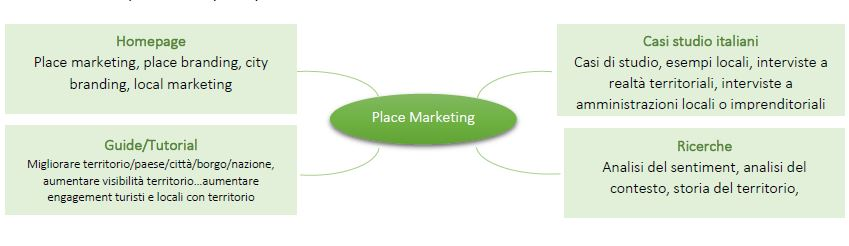
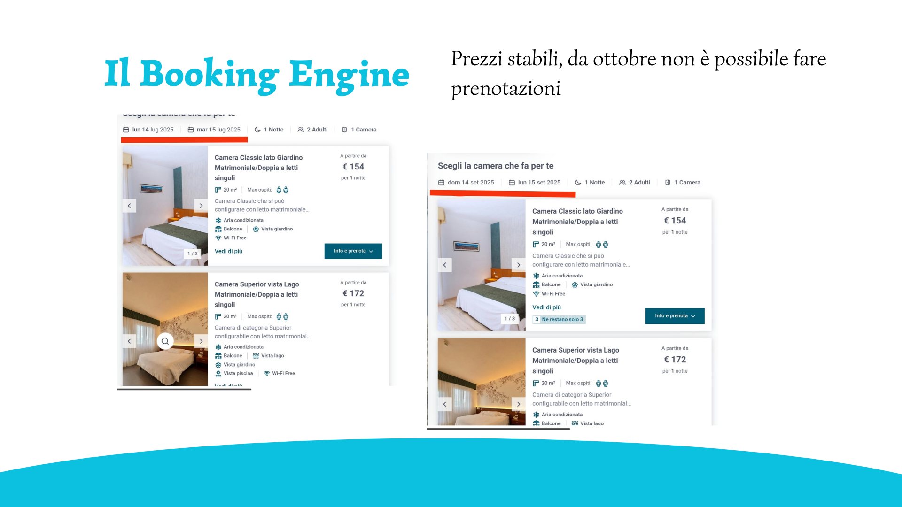
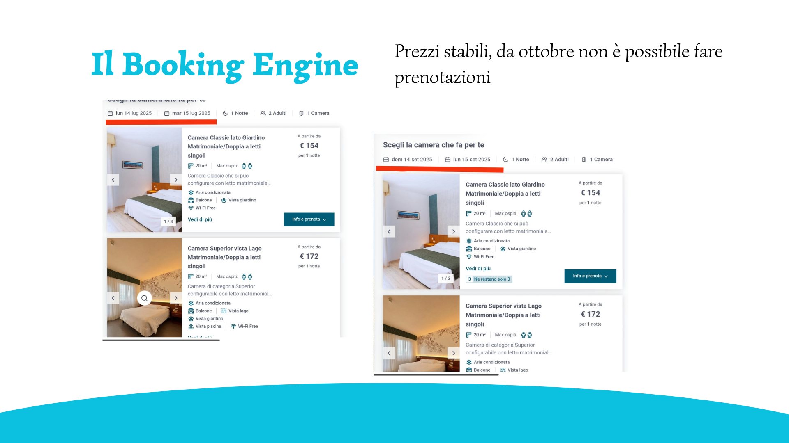

E l i s a s o r r i


![]()
Un sito realizzato in Wordpress. Analisi keyword per la SEO. L'obiettivo era raccontare le modalità di applicazione del marketing al territorio.
Progettazione e implementazione di un sito di fornitura di materiali per la protezione della salute durante l'emergenza Covid-19

Progettazione del database per la gestione delle ordinazioni di un ristorante.

APPI è un progetto realizzato nel 2020 all'interno di un'iniziativa universitaria "Ideazione di soluzioni ICT per la gestione di crisi", che prevedeva la progetta di una piattaforma digitale per aiutare le imprese a trovare gli articoli che in quel periodo risultavano di difficile reperimento, mostrando i fornitori più vicini alla propria sede.
L'utente inseriva il prodotto ricercato e la città in cui era interessato a trovare i fornitori, e gli viene presentata un'interfaccia dove sono elencati gli articoli situati nella città, provincia indicata. L'idea di progetto prevedeva una campagna di comunicazione attivata dai comuni per richiedere ai fornitori di partecipare e inserire gli articoli a fine informativo. Anche le imprese contribuiscono a responsabilizzare i fornitori circa l'inserimento sulla piattaforma dei prodotti disponibili. I fornitori possono inserire le informazioni sulla propria attività e gli articoli prodotti e posseduti in magazzino.
La descrizione del sistema informativo,
riportante gli attori e le loro azioni.
Realizzazione Sequence diagram, rappresentante le interazioni interne al sito tra utente, sistema e Database.
Realizzazione delle StoryBoard e definizione Mappa ad albero con le funzioni ordinate gerarchicamente.

Implementazione sito: Pagina index, homepage, mostra una spiegazione di che cos’è APPI e una barra di ricerca. Mostra inoltre un link in altro a destra dove è possibile trovare di cosa necessitano le imprese per ripartire.
La ricerca dà come risultato una nuova pagina in cui si possono vedere i fornitori che hanno il prodotto disponibile insieme alle informazioni essenziali relative ai fornitori.
Cliccando “vedi i loro prodotti” è possibile visualizzare una pagina dedicata al fornitore e ai loro prodotti con le relative caratteristiche.
Prototipo della pagina privata personale dedicata al fornitore nella quale può aggiungere prodotti, eliminare prodotti, modificare il profilo, e modificare la password:
Realizzazione di un sito all'interno di un corso universitario di web writing e miglioramento dell'indicizzazione sui motori di ricerca. Il sito è attualmente reperibile online all'indirizzo placemarketing.altervista.org, e ha l'obiettivo di raccontare attraverso articoli le modalità di applicazione del marketing al territorio. Il sito è realizzato in Wordpress, con l'utilizzo dei plug-in Elementor, gestore di file WP, Yoast SEO. All'interno della sezione Blog tutti gli articoli sono stati indicizzati tramite le pratiche suggerite da SeoYoast e il controllo della presenza online tramite Google Search Console.
Innanzitutto, si è cercato di determinare il target: un gruppo di appassionati di marketing che voglia approfondire la promozione dei territori. Per cui per quanto vario, si tratta di un target istruito, attento alle sfere sociali e culturali, che si aspetta un linguaggio semplice e informale ma che utilizzi liberamente termine tecnici. Un target che si aspetta il rispetto della propria figura, con un supporto serio e concreto, poiché nel momento in cui effettua la ricerca si sta, probabilmente, approcciando a un progetto complesso e responsabilizzante e necessità di procedure e casi studio.
è stato dunque misurato lo strumento dell'Indice di Gulpease che ha rivelato testi complessi da leggere per un pubblico con licenza elementare o media, ma considetato che il target raggiunto potrebbe avere un livello di conoscenze elevato, il linguaggio dovrebbe essere adeguato..
Creazione della sitemap, la definizione e descrizione delle pagine, e le parole chiave stabilite per ciascuna pagina.
Per ogni pagina si definiscono le personas e il linguaggio utilizzato.
Tramite gli strumenti online di SeoZoom e di Google Ads si selezionano tra le parole individuate precedentemente quelle che effettivamente hanno un seguito online. Dall'analisi semantica delle parole chiave, se ne derivano ulteriori su cui è più utile concentrarsi per indicizzare l'articolo.
Visuale sito + link di rimando a Place Marketing. Un fattore importante ha assunto la ricerca per creare testi di una lunghezza prestabilita non eccessiva, evitando la ripetizione eccessiva dei termini.
Progettazione di un database che gestisca le informazioni riguardanti ordini, piatti, prodotti per la creazione di un sito per ordinazione di piatti da un ristorante. (Realizzato per un esame di gestione e progettazione di base di dati)
Il punto di partenza è la creazione di un modello concettuale, ad esempio il modello entità-relazione, per identificare attori e oggetti di interesse sulla quale raccogliere le informazioni, ciascuno ha i propri attributi descrittivi, e le associazioni che intercorrono tra questi oggetti.
Creazione del modello logico con definizione della tipologia di variabile per ogni attributo, indicando le chiavi primarie e foreign keys(chiavi esterne) legati da un vingolo di integrità referenziale. Implementazione delle tabelle su Mysql e collegamento delle chiavi esterne con le chiavi interne delle rispettive tabelle cui fanno capo.
Creazione del modello logico con definizione della tipologia di variabile per ogni attributo, indicando le chiavi primarie e i vincoli di integrità referenziale, ovvero le chiavi esterne (foreign keys).
Successivamente ho realizzato lo schema concettuale della struttura di un Data Warehouse.
Realizzazione Con Figma di un prototipo interattivo di una piattaforma per vedere i migliori film e serie tv cult.

Schermata di dimostrazione della realizzazione del prototipo
Questo progetto è fatto al fine di mostrare le aree del sito. Siccome il progetto era basata sull'idea di controllo manuale a distanza(con gesti delle mani), non segue le regole convenzionali di movimento all'interno del sito. Per muoversi nella simulazione sottostante è sufficiente usare la barra spaziatrice o le freccette.
Miglioramento del sito del Carrefour attraverso l'utilizzo della valutazione euristica di Jacob Nielsen in 10 regole, e applicazione delle linee guida legate agli e-commerce indicate sul sito
«Nielsen&Norman Group»:
Download della presentazione del progetto
Tra le tante migliorie, in particolare una quantità eccessiva di pubblicità nell'homepage non permette all'utente di accingere facilmente a quello che è lo scopo principale del sito: fare la
Valutazione sito del comune di Vibo Valentia. utilizzo del sito Mauve per la rivelazione degli errori, in particolare analisi degli errori percebili (ad esempio un basso contrasto nei colori al click o all'hover, valore interlinea insufficiente), gli errori comprensibili (assenza etichette su ipertesti/immagini) ed errori utilizzabili. Dal punto di vista degli errori robusti notiamo che non è stato utilizzato role=status per indicare alle tecnologie assistive che l'invio dei moduli è riuscito. Nel complesso il sito presenta un buon livello di accessibilità(87%). È presente la pagina 'Accessibilità' con gli obiettivi e il questionario di auto-valutazione; tuttavia, non è rintracciabile facilmente nel footer, o in altra posizione della homepage, ma solo dalla barra di ricerca. Download del riassunto del progetto
Mirachallenge è un progetto di Giovani a Mirafiori, nato con l'idea di rigenerare spazi cittadini e portare eventi di intrattenimento, cultura e sport. All'interno del team "spazi rigenerati", ho realizzato i contenuti comunicative sia cartacei sia online per la pagine Instagram.
Creazione di contenuti con Canva e/o Photoshop.
Cartoline cartacee
Carosello per instagram


.png)
.png)
Post instagram per le iniziative "caccia al tesolo" e "Laboratorio natalizio" realizzate per i bambini del quartiere
Carosello legato alla caccia al tesoro
Post instagram e formato volantino cartaceo per l'incontro legato alla creazione di un murales nel quartiere
Il murales realizzato presso gli Orti Generali

Realizzazione di una copertina adesiva da applicare ai mattoncini come oggetto identitario, distribuito ai 30 espositori.
Realizzazione volantino pieghevole per l'evento GrugliascoFest "Mattoncini in festa", il volantino è nato con lo scopo di rispondere all'esigenza delle realtà imprenditoriali sponsor dell'iniziativa.
Fronte e Retro del volantino
Progetto di rinnovamento dell'immagine per un hotel. La Casa della Trota, o Hotel Ponale, situata sul lago a Riva del Garda, è abbandonata da tempo e in stato di degrado, ma il contesto in naturale in cui è collocato offre, se accompagnato da un rinnovamento dell'immagine, grandi potenzialità. Il nome rimanda all'antico consumo di trote all'interno del ristorante, ma la struttura nel tempo si è espansa per diventare hotel. In passato viveva principlamente di un turismo locale che visitava il posto per la presenza del ristorante con la prelibatezza tipica, tuttavia l'hotel è difficilmente raggiungibile da strada e sarebbe più comodo introdurre come principale punto di approdo un molo sul lago. Per un corso frequentato all'interno del master in "Digital marketing per il turismo" abbiamo espresso la necessità per noi che legasse maggiormente la propria identitèà all'acqua, diventando un'esperienza, di lusso (per il pubblico che potrebbe raggiungerlo via lago), che seguisse il soggiorno dei clienti con una tabella di marcia ricca di attività marine. Segue un immagine del prototipo del sito realizzato sulla nuova immagine per il brand, con colori legati al lago, il blu, il verde acqua... ma anche colori caldi per rappresentare l'esperienza accogliente che si vivrebbe nell'hotel. Segue una foto dello stato attuale dell'albergo, e delle immagini generate con l'AI Runaway tramite le indicazioni fornite dalla nostra idea di base. Il prompt che è stato fornito all'AI è molto dettagliato, riportava i colori desiderati e i toni caldi, la richiesta della presenza di elementi naturali tipici della fauna del lago, la volontà di far giungere i clienti via lago e di avere delle attività a stretto contatto con l'acqua.
Pratiche di digital marketing per aiutare gli hotel nel sottile equilibrio tra OTA e prenotazione diretta agli Hotel. Disintermediare gli Hotel da OTA e agenzie di viaggio tramite i Booking Engine e offerte di cross-selling.
 
